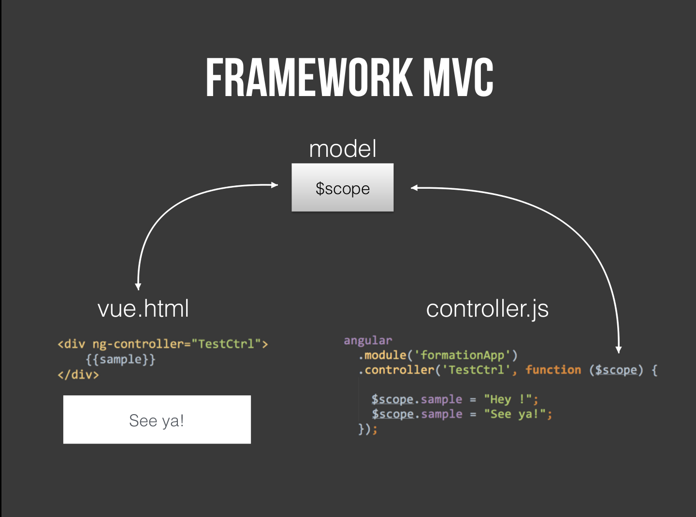

Alexandre Nunesse | Jason Conard
Liens utiles
- Exercices: Doc exercice
- Projet: Git Tweeter
Environnement
Outils de développement


AngularJS
Current version: 1.3.15
NodeJS et NPM
Current versions: Node 0.12.2 & Npm 2.8.3
Gulp
Current version: 3.8.11
Sass
Yeoman

LiveCoding
Responsive web design
barackobama.com
Depuis 2014 plus de page sont demandées depuis des mobiles que des ordinateurs.
Différentes approches de conception responsive
- Mobile 1st
- Desktop 1st
Media queries
Une nouveauté CSS3
Mixins, variables et nesting
Comment vous faire devenir des développeurs Front
Web Component
LiveCoding
My Box
Javascript
Concepts
- Non typé
- Orienté objet , mais sans classes.
- Fonctionnel
ECMAScript 5
- Language de programmation
- Un standard
- Implémenté dans le JavaScript, l'ActionScript et le C++
ECMAScript 6/2015
- Mot clé : class
- Gestion des modules
- Promesses
Mode strict
Vérifications plus rigoureuses
- Variable non déclarée signalée
- Plus d'objet global à la place de undefined pour this
- Impose l'unicité des propriétés
- Impose l'unicité des noms d'arguments dans les fonctions
- Pas de saut de ligne après return et throw
Passage par référence
- Types primitifs : boolean, number (imprécis), string, undefined, null.
- Passage par valeur
- Type Objet : Tous les autres types (function, array ...).
- Passage par référence
- angular.copy(var)
Autoboxing
- boolean, number, string sont des types immuables.
- Convertis en objet Boolean Number et String à si besoin.
- var myString = "blabla"; ==> C'est un type primitif.
- myString.length; ==> myString est converti en objet.
Closure
- Accolades != Closure
- Scopes JS relatifs aux fonctions.
Valeurs par défaut
- Les && et || ne retournent pas forcément un booléen.
- Ils retournent le dernier objet validé.
-
Pour créer une valeur par défaut :
var number = givenNumber || 5;
AngularJS
Un framework JavaScript libre et open-source par Google
Depuis quand? 2009
AngularJS est un Framework se basant sur le pattern MVC
Plus généralement on peut en retenir 3 concepts clefs:
- Framework MVW
- Two way databinding
- Framework ouvert et modulaire
Les principaux conteneurs d'AngularJS:
- Le module: sans module pas d'application
- Controllers
- Service & Factory
- Le scope
- Les directives
Architecture MVC

LiveCoding
Hello AngularJS
Les directives
L'art de créer ses propres balises/attributs html
Convention camel case maDirective <-- --> ma-directive convention xml
Directives à connaître
- ng-app : Précise les éléments sur lequel le module agira.
- ng-controller : Idem mais pour un Controller.
- ng-view : Vue liée à la route.
- ng-include : Vue liée à une page html.
- ng-click : Un événement au clic
- ng-repeat : Liste un tableau
- ng-show/ng-if : Affiche un élément sous condition
- ng-class : Applique une classe CSS sous condition
Liste officielle des directives : https://docs.angularjs.org/api/ng/directive
Opérations sur les formulaires : booléens
- $pristine : Champ non modifié
- $dirty : Champ modifié
- $valid : Champ valide
- $invalid : Champ non valide
- $submitted : Formulaire déjà envoyé
- $error : Test par type d'erreur
Opérations sur les formulaires : $error
- $error.required
- $error.email
- $error.pattern
- $error.min
- $error.max
- ...
Opérations sur les formulaires : directives
- ng-model : Bind une variable du scope à un input.
- ng-change : Événement lors de la modif d'un input.
- ng-focus : Événement lors du focus sur l'input.
- ng-blur : Événement lors de la sortie du focus.
- ng-required
- ng-minlength
- ng-maxlength
- ng-pattern
Opérations sur les formulaires : classes css
- .ng-valid
- .ng-invalid
- .ng-pristine
- .ng-dirty
- Ces classes sont posés sur les form et les input correspondants.
Opérations sur les formulaires : ressources
LiveCoding
Directive + formulaire
Convention NodeJS
- Controller as
AngularJS pro tricks
- Héritage
- ngRepeat : $odd/$even, $index
- Animations avec ngClass et transition (CSS3)
- and more